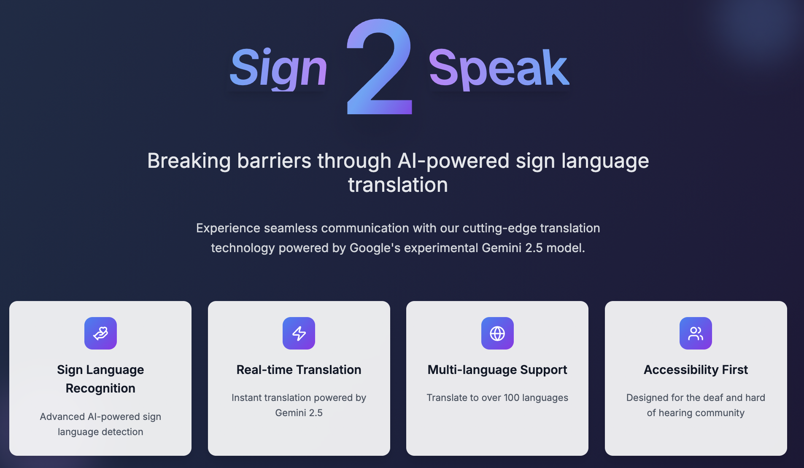

I’m a passionate machine learning researcher and engineer with a strong mathematical foundation and experience in both academic and industry projects. Currently, I’m pursuing an MSc in Machine Learning at University College London (UCL), after earning a First-Class Honours BSc in Mathematics from Imperial College London.
My work spans applied deep learning, Bayesian modeling, and human-robot interaction. I’ve conducted research on option pricing using ML models, real-time robot tutoring systems, and knowledge tracing using multimodal data. I also interned at Goldman Sachs, where I developed a hedging model for natural gas futures using neural networks and value-at-risk analysis.
In my spare time, I enjoy tennis, basketball, and exploring new tools at the intersection of AI and creativity.
Experience
-
Spring 2021 Engineering Intern · Goldman SachsBuilt a neural-network-based hedging model for natural gas futures using Python. Integrated weather and market data to predict prices. Won 1st place among 6 teams.
- Python
- Neural Networks
- Finance
-
Summer 2022 Undergraduate Researcher (Option Pricing) · Imperial CollegeCompared ML models with traditional pricing methods. Cleaned 20 years of data, improved prediction time and reduced error significantly.
- Python
- SQL
- ML
- Finance
-
Summer 2023 Undergraduate Researcher (HRI) · Imperial CollegeDeveloped a multi-modal robot tutor using CNN, YOLO, MediaPipe, and LLMs. Boosted accuracy and speed for real-time interactions.
- PyTorch
- YOLO
- MediaPipe
- LLMs
-
Sign2Speak: AI-Powered Sign Language Translation
Developed over a weekend for the ElevenLabs × LFH Build Weekend hackathon, this system translates sign language into speech using a Gemini-powered vision pipeline and displays spoken words as text on an AR overlay, enabling seamless, bidirectional conversation on smart glasses.
-
LLMs
-
Computer Vision
-
AR
-
FastAPI
-
VoiceAI
-
-
 BlockChain Coder: Enhancing LLM Reasoning for Unseen Coding Problems
BlockChain Coder: Enhancing LLM Reasoning for Unseen Coding ProblemsInvestigated the performance gap of LLMs on recent vs. older LeetCode problems, revealing a significant reliance on memorization. To address this, I developed BlockChain Coder, a novel multi-agent framework (Planner, Optimizer, Debugger) that guides LLMs to solve complex coding challenges through structured reasoning. The system uses two approaches—one based on unit tests and another on question analysis—to generate solutions step-by-step. This framework dramatically improved accuracy on unseen problems and enabled a smaller model (DeepSeek) to rival the performance of GPT-4, proving its ability to enhance an LLM's true problem-solving skills.
- LangChain
- Multi-Agent Systems
- LLMs
- Code Generation
-
Simulating Predator-Prey Dynamics with Multi-Agent Reinforcement Learning
This research explores the emergence of complex behaviors in a simulated predator-prey ecosystem using Multi-Agent Reinforcement Learning (MARL). We designed and compared various training strategies, including decentralized (DQN, DDPG) and centralized (MADDPG) approaches, to analyze their impact on agent intelligence. Key contributions include novel reward-shaping techniques to foster cooperation and ensemble methods to enhance the agents' robustness against evolving opponent policies, providing a powerful tool for analyzing complex ecological interactions.
- MARL
- Reinforcement Learning
- Agent-Based Simulation
- Reward Shaping
- MADDPG
-
Real-time Robot Tutor
Built a multi-person robot tutoring system combining vision, audio, and LLM modules. Designed for adaptive instruction using Bayesian Knowledge Tracing.
- PyTorch
- YOLO
- MediaPipe
- LLMs
-
ML for Option Pricing
Compared traditional vs modern methods for financial derivative pricing. Improved prediction accuracy and speed using MDN and BNN.
- SQL
- Python
- ML
- Finance